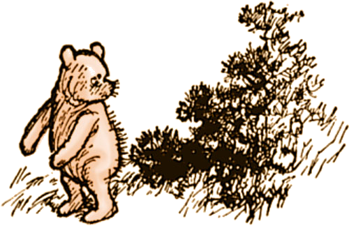
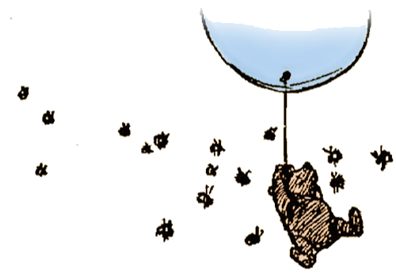
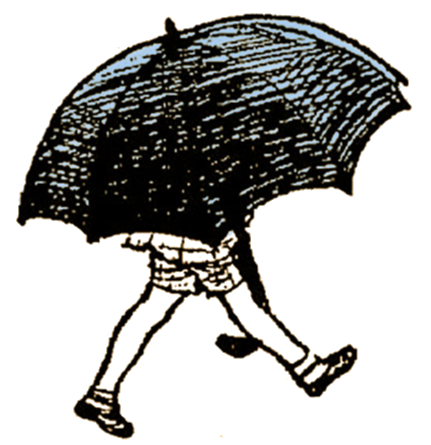

Page Four

He crawled out of the gorse-bush, brushed the prickles from his nose, and began to think again. And the first person he thought of was Christopher Robin.
("Was that me?" said Christopher Robin in an awed voice, hardly daring to believe it.
"That was you."
Christopher Robin said nothing, but his eyes got larger and larger, and his face got pinker and pinker.)
So Winnie-the-Pooh went round to his friend Christopher Robin, who lived behind a green door in another part of the forest.
"Good morning, Christopher Robin," he said.
"Good morning, Winnie-ther-Pooh," said you.
"I wonder if you've got such a thing as a balloon about you?"
"A balloon?"
"Yes, I just said to myself coming along: 'I wonder if Christopher Robin has such a thing as a balloon about him?' I just said it to myself, thinking of balloons, and wondering."
"What do you want a balloon for?" you said.
Winnie-the-Pooh looked round to see that nobody was listening, put his paw to his mouth, and said in a deep whisper: "Honey!"
"But you don't get honey with balloons!"
"I do," said Pooh.
Well, it just happened that you had been to a party the day before at the house of your friend Piglet, and you had balloons at the party. You had had a big green balloon; and one of Rabbit's relations had had a big blue one, and had left it behind, being really too young to go to a party at all; and so you had brought the green one and the blue one home with you.
"Which one would you like?" you asked Pooh.
He put his head between his paws and thought very carefully.
"It's like this," he said. "When you go after honey with a balloon, the great thing is not to let the bees know you're coming.
Now, if you have a green balloon, they might think you were only part of the tree, and not notice you, and, if you have a blue balloon, they might think you were only part of the sky, and not notice you, and the question is: Which is most likely?"
"Wouldn't they notice you underneath the balloon?" you asked.
"They might or they might not," said Winnie-the-Pooh. "You never can tell with bees." He thought for a moment and said: "I shall try to look like a small black cloud. That will deceive them."
"Then you had better have the blue balloon," you said; and so it was decided.
Well, you both went out with the blue balloon, and you took your gun with you, just in case, as you always did, and Winnie-the-Pooh went to a very muddy place that he knew of, and rolled and rolled until he was black all over;
And then, when the balloon was blown up as big as big, and you and Pooh were both holding on to the string, you let go suddenly, and Pooh Bear floated gracefully up into the sky, and stayed there—level with the top of the tree and about twenty feet away from it.
"Hooray!" you shouted.
"Isn't that fine?" shouted Winnie-the-Pooh down to you. "What do I look like?"
"You look like a Bear holding on to a balloon," you said.
"Not," said Pooh anxiously, "—not like a small black cloud in a blue sky?"
"Not very much."
"Ah, well, perhaps from up here it looks different. And, as I say, you never can tell with bees."
There was no wind to blow him nearer to the tree, so there he stayed. He could see the honey, he could smell the honey, but he couldn't quite reach the honey
After a little while he called down to you.
"Christopher Robin!" he said in a loud whisper.
"Hallo!"
"I think the bees suspect something!"
"What sort of thing?"
"I don't know. But something tells me that they're suspicious!"
"Perhaps they think that you're after their honey."
"It may be that. You never can tell with bees."
There was another little silence, and then he called down to you again.
"Christopher Robin!"
"Yes?"
"Have you an umbrella in your house?"
"I think so."
"I wish you would bring it out here, and walk up and down with it, and look up at me every now and then, and say 'Tut-tut, it looks like rain.' I think, if you did that, it would help the deception which we are practising on these bees."
Well, you laughed to yourself, "Silly old Bear!" but you didn't say it aloud because you were so fond of him, and you went home for your umbrella.
"Oh, there you are!" called down Winnie-the-Pooh, as soon as you got back to the tree. "I was beginning to get anxious. I have discovered that the bees are now definitely Suspicious."
"Shall I put my umbrella up?" you said.
"Yes, but wait a moment. We must be practical. The important bee to deceive is the Queen Bee. Can you see which is the Queen Bee from down there?"
"No."
"A pity. Well, now, if you walk up and down with your umbrella, saying, 'Tut-tut, it looks like rain,' I shall do what I can by singing a little Cloud Song, such as a cloud might sing.... Go!"
So, while you walked up and down and wondered if it would rain, Winnie-the-Pooh sang this song:
How sweet to be a Cloud
Floating in the Blue!
Every little cloud
Always sings aloud.
"How sweet to be a Cloud
Floating in the Blue!"
It makes him very proud
To be a little cloud.